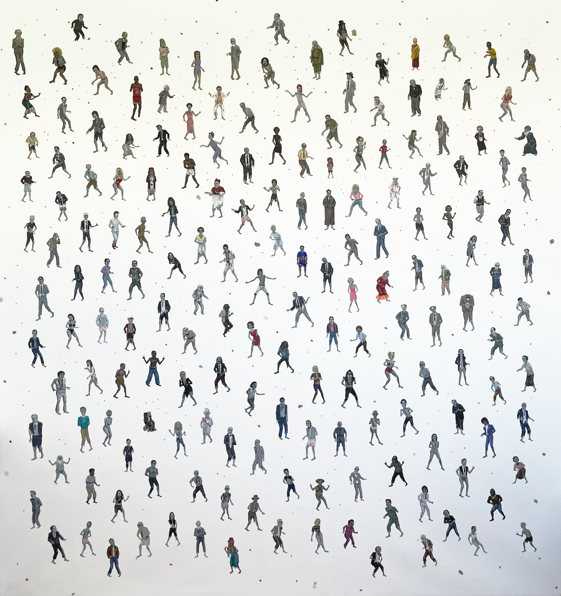
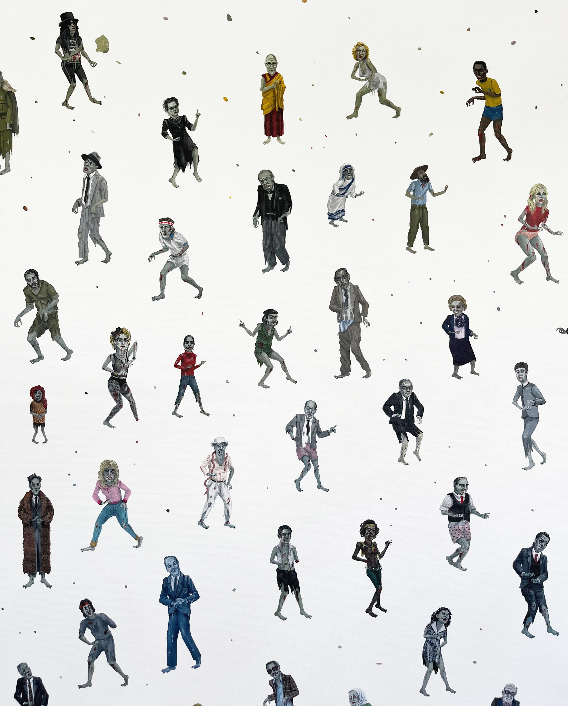
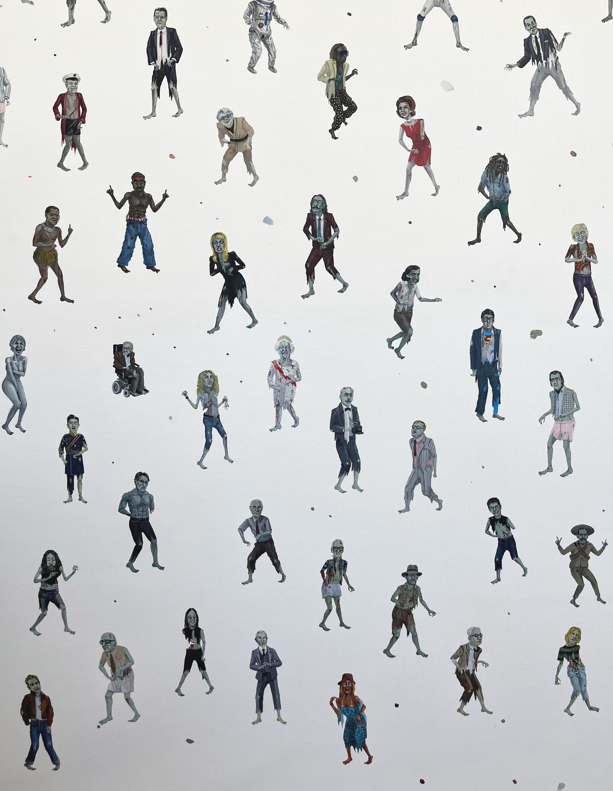
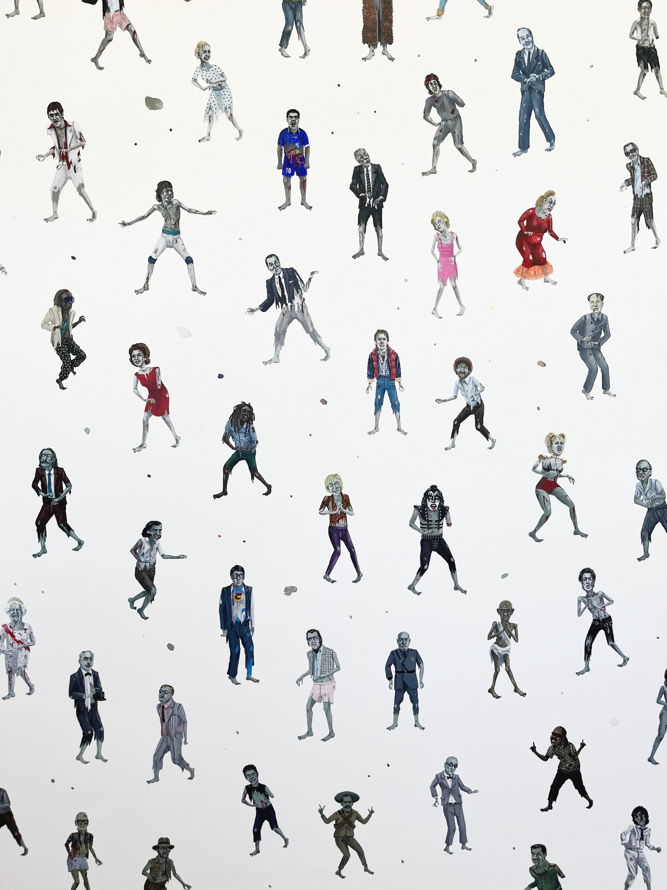
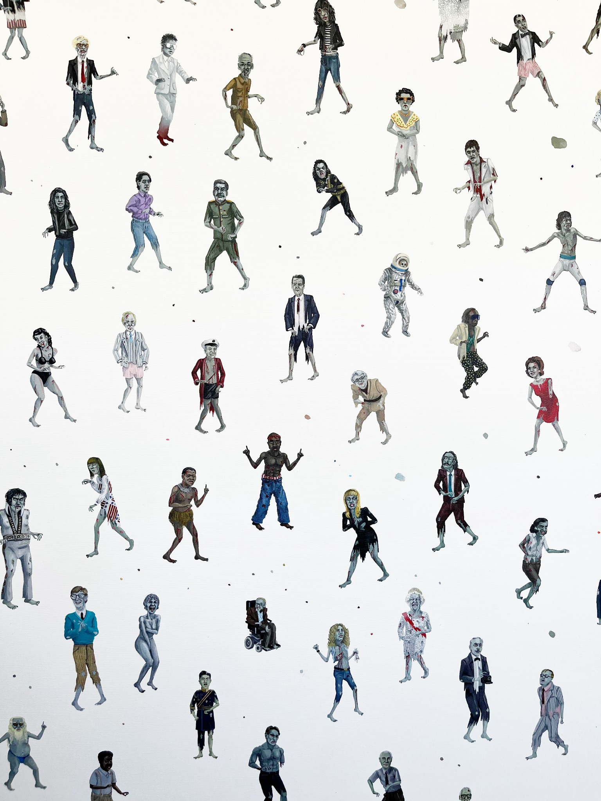

S.XX
A pictorial ontology of representations that condense the central themes of the century, presented as vestiges of an unfinished past.
Figures represented
- Adolf Hitler
- Alan Moore
- Albert Einstein
- Alberto Olmedo
- Alexander Witcomb
- Al Capone
- Alfred Hitchcock
- Alfredo Zitarrosa
- Ana Mendieta
- Andy Kaufman
- Andy Warhol
- Antonio Berni
- Arnold Schwarzenegger
- Astor Piazzolla
- Bela Lugosi
- Benito Mussolini
- Benito Quinquela Martín
- Bettie Page
- Bill Gates
- Bob Dylan
- Bob Marley
- Bob Ross
- Brigitte Bardot
- Bruce Lee
- Carl Gustav Jung
- Carl Sagan
- Carlos Gardel
- Carlos Menem
- Carlos Salvador Bilardo
- Charles Chaplin
- Charles Manson
- Che Guevara
- Cindy Sherman
- Claude Lévi-Strauss
- Clark Kent
- Clement Greenberg
- Curly
- Dalai Lama
- David Lynch
- Diego Maradona
- Divine
- Don Diego de la Vega
- Edith Piaf
- El Chavo del Ocho
- Elvis Presley
- Emilio Pettoruti
- Enrique Santos Discépolo
- Ernest Hemingway
- Eva Perón
- Federico Klemm
- Federico Manuel Peralta Ramos
- Fidel Castro
- Frank Sinatra
- Franklin D. Roosevelt
- Frida Kahlo
- Freddie Mercury
- Francisco Franco
- Gene Simmons
- George A. Romero
- George Lucas
- Guillermo Vilas
- Hebe de Bonafini
- Héctor Germán Oesterheld
- Henry Ford
- Henry Kissinger
- Hermeto Pascoal
- Hirohito
- Ho Chi Minh
- Hugh Hefner
- Indiana Jones
- Isadora Duncan
- Jackie Kennedy
- Jackson Pollock
- James Brown
- James Dean
- Jerry Seinfeld
- Jimi Hendrix
- Johnny Cash
- John Cage
- John D. Rockefeller
- John F. Kennedy
- John Lennon
- John Travolta
- Jorge Cafrune
- Jorge Luis Borges
- Joseph Stalin
- José León Pagano
- Joey Ramone
- Julio Iglesias
- Juan Pablo Renzi
- Juanito Laguna
- Keith Richards
- Kurt Cobain
- Lady Diana Spencer
- Larry
- Laura Palmer
- Le Corbusier
- Lenin
- Liliana Maresca
- Lou Reed
- Luis Felipe Noé
- Luis Miguel
- Madonna
- Madre Teresa de Calcuta
- Mao Zedong
- Mahatma Gandhi
- Marcel Duchamp
- Margaret Thatcher
- Marie Curie
- Marilyn Monroe
- Marion Crane
- Marshall McLuhan
- Marta Minujín
- Marty McFly
- Michael Jackson
- Michael Jordan
- Michel Foucault
- Mick Jagger
- Mijaíl Gorbachov
- Miles Davis
- Moe
- Mr. T
- Muddy Waters
- Muhammad Ali
- Neil Armstrong
- Nelson Mandela
- Nina Simone
- Orson Welles
- Osho
- Ozzy Osbourne
- Pablo Picasso
- Palito Ortega
- Pamela Anderson
- Pancho Villa
- Papa Juan XXIII
- Peggy Guggenheim
- Pelé
- Paul McCartney
- Prince
- Reina Isabel II
- Richard Nixon
- Robert Plant
- Rocky Balboa
- Ronald Reagan
- Rosa Luxemburg
- Salvador Dalí
- Saddam Hussein
- Sarah Connor
- Sid Vicious
- Silvio Soldán
- Simone de Beauvoir
- Slash
- Stephen Hawking
- Stan Lee
- Stevie Wonder
- Susan Sontag
- Susana Giménez
- Takeshi Kitano
- Taxi Driver
- Tina Turner
- Tita Merello
- Tom Wolfe
- Tony Montana
- Truman Capote
- Tupac Shakur
- Vinicius de Moraes
- Walt Disney
- Walter Benjamin
- Winston Churchill
- Woody Allen
- Xuxa
- Yoko Ono
- Ziggy Stardust





About the work
S.XX is conceived as a pictorial inventory of recognizable figures that function as active remnants of a saturated historical system. Each image condenses ideas, myths, violence, desires, and fictions that shaped the twentieth century and that, stripped of their original contexts, persist as zombified forms: neither fully alive nor definitively dead. The painting presents neither a pantheon nor a genealogy, but a field of unstable equivalences in which political leaders, cultural icons, and real and fictional characters share the same ontological status. The selection of figures follows neither a stable canon nor a historical hierarchy, but a logic of condensation in which global references, local affiliations, and singular choices coexist, revealing the inevitably situated nature of any act of archiving. Within this nonhierarchical space, painting acts as a device of suspension: it fixes representations at the moment they cease to convey a closed meaning and begin to exist as vestiges of an unfinished past that remains active in the present.